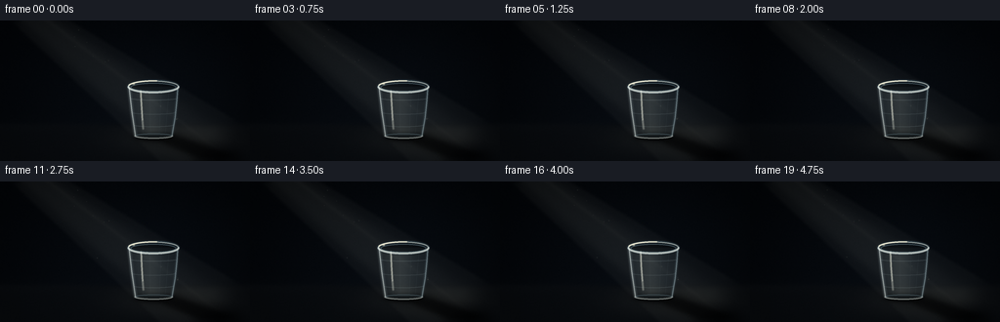
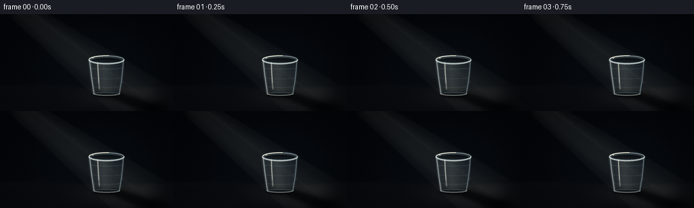

CODING AGENTS AS PIXEL WORLD MODELS
traex/GPT-5.6-Sol · phygen_044
点击播放 · 原生 RGB 像素
逐轮保存的候选
回放视频、检查图与代码变化。
每份候选均可单独播放。实际图片检查记录在下方工具轨迹中。
候选 01播放与检查图
点击播放 · 原生 RGB 像素


展开代码变化
--- 上一保存版本 +++ 本次保存版本 @@ -0,0 +1,257 @@ +from pathlib import Path + +import cv2 +import numpy as np +from PIL import Image + +import artifact_io + + +# Render larger than delivery resolution and downsample. Besides antialiasing, +# this makes the very thin transparent-plastic highlights survive at 256x144. +S = 4 +W, H = 256 * S, 144 * S + + +def smoothstep(edge0, edge1, x): + t = np.clip((x - edge0) / (edge1 - edge0), 0.0, 1.0) + return t * t * (3.0 - 2.0 * t) + + +def blend(im, color, alpha): + """Alpha composite a constant RGB color onto a float RGB image.""" + a = np.clip(alpha, 0, 1)[..., None] + return im * (1.0 - a) + np.asarray(color, np.float32) * a + + +def poly_mask(points, blur=0.0): + m = np.zeros((H, W), np.float32) + pts = np.round(np.asarray(points) * S).astype(np.int32) + cv2.fillPoly(m, [pts], 1.0, lineType=cv2.LINE_AA) + if blur: + m = cv2.GaussianBlur(m, (0, 0), blur * S) + return np.clip(m, 0, 1) + + +def ellipse_mask(center, radii, blur=0.0): + m = np.zeros((H, W), np.float32) + c = tuple(np.round(np.asarray(center) * S).astype(int)) + r = tuple(np.round(np.asarray(radii) * S).astype(int)) + cv2.ellipse(m, c, r, 0, 0, 360, 1.0, -1, cv2.LINE_AA) + if blur: + m = cv2.GaussianBlur(m, (0, 0), blur * S) + return np.clip(m, 0, 1) + + +def line_mask(points, thickness=1.0, blur=0.0, closed=False): + m = np.zeros((H, W), np.float32) + pts = np.round(np.asarray(points) * S).astype(np.int32) + cv2.polylines(m, [pts], closed, 1.0, + max(1, int(round(thickness * S))), cv2.LINE_AA) + if blur: + m = cv2.GaussianBlur(m, (0, 0), blur * S) + return np.clip(m, 0, 1) + + +def ellipse_stroke(center, radii, thickness=1.0, start=0, end=360, blur=0.0): + m = np.zeros((H, W), np.float32) + c = tuple(np.round(np.asarray(center) * S).astype(int)) + r = tuple(np.round(np.asarray(radii) * S).astype(int)) + cv2.ellipse(m, c, r, 0, start, end, 1.0, + max(1, int(round(thickness * S))), cv2.LINE_AA) + if blur: + m = cv2.GaussianBlur(m, (0, 0), blur * S) + return np.clip(m, 0, 1) + + +# Fixed fine grain gives the darkness a photographic rather than flat-vector +# appearance. It is stationary, like sensor/scene texture, not dancing noise. +rng = np.random.default_rng(4401) +grain = rng.normal(0, 1, (H, W)).astype(np.float32) +grain = cv2.GaussianBlur(grain, (0, 0), 0.32 * S) +grain /= max(grain.std(), 1e-5) + +# Reproducible motes: x, y, radius, brightness, drift-x, drift-y, phase. +motes = [] +for _ in range(30): + motes.append((rng.uniform(40, 190), rng.uniform(5, 112), + rng.uniform(.18, .68), rng.uniform(.35, 1.0), + rng.uniform(-.25, .35), rng.uniform(-.65, -.16), + rng.uniform(0, 2 * np.pi))) + + +def render_frame(frame_index): + t = frame_index / 4.0 + yy, xx = np.mgrid[0:H, 0:W].astype(np.float32) + x, y = xx / S, yy / S + + # Nearly black blue-charcoal room, subtly brighter behind the subject. + radial = np.exp(-(((x - 152) / 108) ** 2 + ((y - 87) / 83) ** 2)) + top_falloff = np.clip(y / 144, 0, 1) + im = np.empty((H, W, 3), np.float32) + im[..., 0] = 2.8 + 3.5 * radial + 1.3 * top_falloff + im[..., 1] = 5.0 + 5.0 * radial + 1.6 * top_falloff + im[..., 2] = 8.0 + 7.0 * radial + 2.0 * top_falloff + + # A low, matte surface. The soft horizon prevents it reading as a stripe. + floor = smoothstep(102.5, 109.0, y) + floor_color = np.stack([ + 9.3 + .026 * (y - 105), + 12.0 + .031 * (y - 105), + 15.2 + .037 * (y - 105)], axis=-1) + im = im * (1 - floor[..., None] * .78) + floor_color * floor[..., None] * .78 + horizon_glow = np.exp(-((y - 106) / 8.5) ** 2) * .65 + im += horizon_glow[..., None] * np.array([1.2, 1.5, 1.8], np.float32) + + # Volumetric shaft from upper left. q is distance across the shaft and p + # distance along it. Its slight pulse is intentionally barely perceptible. + apex = np.array([20.0, -13.0], np.float32) + direction = np.array([.796, .605], np.float32) + perp = np.array([-direction[1], direction[0]], np.float32) + p = (x - apex[0]) * direction[0] + (y - apex[1]) * direction[1] + q = (x - apex[0]) * perp[0] + (y - apex[1]) * perp[1] + width = 13.0 + np.maximum(p, 0) * .108 + beam_edge = smoothstep(5.0, 0.0, np.abs(q) - width) + longitudinal = smoothstep(-3, 14, p) * (1 - smoothstep(230, 262, p)) + beam_core = np.exp(-(q / (width * .68 + 1)) ** 4) + flicker = 1.0 + .018 * np.sin(t * 1.73 + .4) + .008 * np.sin(t * 4.1) + beam = beam_edge * longitudinal * (.055 + .070 * beam_core) * flicker + # The lit air is neutral-warm against the blue-black room. + im = blend(im, (138, 143, 136), beam) + + # A couple of uneven strands make this a ray in imperfect air rather than + # a perfectly uniform graphic wedge. + strand = np.exp(-((q + 7.0 + .5 * np.sin(t * .8)) / 2.3) ** 2) + strand *= longitudinal * .024 + im = blend(im, (179, 177, 160), strand) + strand2 = np.exp(-((q - 16.0) / 4.8) ** 2) * longitudinal * .011 + im = blend(im, (157, 162, 155), strand2) + + # Pool of oblique light where the beam reaches the tabletop. + landing = np.exp(-(((x - 179) / 58) ** 2 + ((y - 122) / 16) ** 2)) * floor + landing *= smoothstep(104, 112, y) * flicker + im = blend(im, (101, 101, 91), landing * .17) + + # Cast shadow, deliberately prominent at the bottom as requested. A wide + # penumbra surrounds a dense umbra, while a small oval anchors the cup. + shadow_shape = [(137, 115), (176, 114), (250, 137), (250, 146), + (208, 146), (166, 127), (138, 121)] + penumbra = poly_mask(shadow_shape, 5.2) + im = blend(im, (1.5, 2.5, 3.7), penumbra * .59) + umbra_shape = [(141, 117), (174, 116), (239, 138), (226, 143), + (202, 140), (164, 124), (140, 121)] + umbra = poly_mask(umbra_shape, 2.0) + im = blend(im, (0.8, 1.3, 2.0), umbra * .53) + # Faint projected upper rim at the far end of the shadow. + rim_shadow = ellipse_mask((224, 138.2), (18.5, 3.5), 2.6) + im = blend(im, (1, 1.5, 2.1), rim_shadow * .24) + contact = ellipse_mask((157, 119.1), (21.0, 3.0), 1.7) + im = blend(im, (.5, 1.0, 1.5), contact * .82) + + # Dust suspended in the ray, moving very slowly upward in warm air. + mote_layer = np.zeros((H, W), np.float32) + for mx, my, radius, bright, vx, vy, phase in motes: + px = mx + vx * t + .32 * np.sin(t * .73 + phase) + py = (my + vy * t - 2.0) % 116 + 2.0 + pp = (px - apex[0]) * direction[0] + (py - apex[1]) * direction[1] + qq = (px - apex[0]) * perp[0] + (py - apex[1]) * perp[1] + ww = 13 + max(pp, 0) * .108 + if pp > 0 and abs(qq) < ww - 1: + cv2.circle(mote_layer, (int(px * S), int(py * S)), + max(1, int(radius * S)), float(bright), -1, cv2.LINE_AA) + mote_layer = cv2.GaussianBlur(mote_layer, (0, 0), .22 * S) + im = blend(im, (205, 204, 183), mote_layer * .31) + + # Translucent empty disposable plastic cup. It tapers toward the bottom, + # unlike a glass, and carries fine mould/ridge lines characteristic of PET. + body_pts = [(131.7, 68.0), (182.3, 68.0), (176.2, 118.4), + (138.3, 118.4)] + body = poly_mask(body_pts, .22) + # Smoky transparent wall; spatial variation suggests refraction while + # retaining the light ray and background through the vessel. + center_haze = np.exp(-((x - 158) / 25) ** 2) * body + wall_alpha = body * (.075 + .045 * center_haze) + im = blend(im, (108, 135, 149), wall_alpha) + + # The beam is bent and concentrated within the cup wall. + refracted = body * np.exp(-((x - (151.5 + .08 * (y - 70))) / 11.5) ** 2) + refracted *= smoothstep(68, 76, y) * (1 - smoothstep(113, 120, y)) + refracted *= .10 * flicker + im = blend(im, (194, 195, 178), refracted) + + # Slightly darker empty interior seen through the top opening. + opening = ellipse_mask((157, 68.0), (25.2, 5.7), .12) + inner = ellipse_mask((157, 68.2), (22.9, 3.9), .16) + im = blend(im, (5, 9, 13), opening * .18) + im = blend(im, (4, 7, 10), inner * .30) + + # Side edges: layered blurred and crisp strokes resemble thin flexible + # plastic rather than heavy glass. + left_curve = [(132, 68), (133.2, 79), (135.0, 94), (138.4, 118)] + right_curve = [(182, 68), (181.1, 82), (179.2, 99), (176.1, 118)] + left_glow = line_mask(left_curve, 2.3, .85) + right_glow = line_mask(right_curve, 2.0, .7) + im = blend(im, (190, 208, 211), left_glow * .34) + im = blend(im, (143, 176, 190), right_glow * .28) + im = blend(im, (225, 232, 226), line_mask(left_curve, .62, .05) * .68) + im = blend(im, (185, 207, 211), line_mask(right_curve, .58, .05) * .52) + + # Narrow travelling reflection, not cup movement. + glint_x = 144.1 + .45 * np.sin(t * .82) + glint_curve = [(glint_x, 72), (glint_x + .55, 86), + (glint_x + 1.6, 102), (glint_x + 2.4, 111)] + im = blend(im, (233, 236, 220), line_mask(glint_curve, 1.15, .45) * .42) + im = blend(im, (246, 245, 226), line_mask(glint_curve[:3], .43, .02) * .64) + + # Rolled upper lip. Dim back arc, bright front arc and tiny twin boundary + # convey a thin, mass-produced plastic rim. + im = blend(im, (112, 145, 160), ellipse_stroke((157, 67.8), (25.7, 5.9), + 1.7, 180, 360, .48) * .43) + im = blend(im, (212, 225, 223), ellipse_stroke((157, 67.8), (25.7, 5.9), + 1.25, 0, 180, .18) * .76) + im = blend(im, (238, 239, 224), ellipse_stroke((157, 67.4), (25.4, 5.6), + .55, 0, 360, .03) * .62) + im = blend(im, (124, 158, 172), ellipse_stroke((157, 68.3), (22.9, 4.0), + .48, 0, 360, .03) * .48) + # Strong highlight only on the lit upper-left part of the rim. + im = blend(im, (255, 249, 222), ellipse_stroke((157, 67.6), (25.7, 5.8), + 1.05, 190, 278, .16) * .88) + + # Shallow reinforcing ribs and vertical mould striations. + for cy, rx, alpha in [(79.5, 24.1, .17), (94.0, 22.2, .12), + (106.7, 20.7, .14)]: + rib = ellipse_stroke((157.1, cy), (rx, 2.0), .42, 5, 175, .05) * body + im = blend(im, (174, 195, 198), rib * alpha) + for frac, a in [(.22, .11), (.42, .075), (.66, .07), (.82, .09)]: + xt = 132 + frac * 50 + xb = 138 + frac * 38 + seam = line_mask([(xt, 71), ((xt + xb) / 2, 94), (xb, 115)], .35, .03) + im = blend(im, (165, 190, 196), seam * a) + + # Bottom seam is visible through clear plastic and completes the silhouette. + im = blend(im, (127, 158, 170), ellipse_mask((157.2, 118.2), (19.2, 2.5), .32) * .08) + im = blend(im, (211, 220, 213), ellipse_stroke((157.2, 118.0), (19.2, 2.45), + .82, 0, 180, .12) * .59) + im = blend(im, (119, 149, 160), ellipse_stroke((157.2, 117.7), (18.1, 1.65), + .42, 180, 360, .02) * .40) + + # A small specular flash at the rolled rim, modulated gently by the shaft. + sparkle = ellipse_mask((136.8, 64.9), (1.35, .72), .35) + im = blend(im, (255, 250, 223), sparkle * (.52 + .08 * np.sin(t * 2.2))) + + # Restrained grain and vignette finish the photographic treatment. + im += grain[..., None] * .42 + vignette = 1.0 - .30 * np.clip(((x - 128) / 148) ** 2 + ((y - 72) / 98) ** 2, 0, 1) + im *= vignette[..., None] + im = np.clip(im, 0, 255).astype(np.uint8) + small = Image.fromarray(im, "RGB").resize((256, 144), Image.Resampling.LANCZOS) + return np.asarray(small, dtype=np.uint8) + + +def main(): + frames = np.stack([render_frame(i) for i in range(20)], axis=0) + artifact_io.save(frames, Path(__file__).resolve().parent) + + +if __name__ == "__main__": + main()
可观测工具轨迹
实际执行的命令与返回图片。
命令 1exit 0
/bin/bash -lc "cat prompt.txt && printf '\\n---RULES---\\n' && cat GENERATION_RULES.md && printf '\\n---SPEC---\\n' && cat task_spec.json"
命令 2exit 0
/bin/bash -lc "find . -maxdepth 2 -type f -printf '%p %s bytes\\n' | sort && printf '\\nAvailable bins:\\n' && command -v ffmpeg || true && command -v python3 || true && python3 - <<'PY' mods=['cv2','numpy','PIL','imageio','moviepy','matplotlib'] for m in mods: try: x=__import__(m); print(m,'OK',getattr(x,'__version__','')) except Exception as e: print(m,'NO',e) PY"
命令 3exit 0
/bin/bash -lc 'cat artifact_io.py'
命令 4exit 0
/bin/bash -lc "python3 generate.py && python3 - <<'PY'
from PIL import Image
import numpy as np
z=np.load('pixels.npz')['pixels']
print('pixels',z.shape,z.dtype,'packed range',z.min(),z.max())
fs=[]
for i in range(20):
a=np.array(Image.open(f'frames/{i:02d}.png'))
fs.append(a)
f=np.stack(fs)
print('frames',f.shape,f.dtype,'RGB min/max/mean',f.min(),f.max(),f.mean(axis=(0,1,2)))
print('temporal absdiff mean/max',np.abs(np.diff(f.astype(int),axis=0)).mean(),np.abs(np.diff(f.astype(int),axis=0)).max())
print('unique frames',len({x.tobytes() for x in f}))
PY
ls -lh pixels.npz inspection.png transition_check.png index.html frames/00.png"命令 5exit 0
/bin/bash -lc "python3 - <<'PY'
from PIL import Image
import numpy as np
im=np.array(Image.open('frames/00.png')).astype(float)
y=.2126*im[:,:,0]+.7152*im[:,:,1]+.0722*im[:,:,2]
# print 2:1 aspect ascii based on local absolute luminance
chars=' .,:;irsXA253hMHGS#9B&@'
for yy in range(0,144,4):
s=''
for xx in range(0,256,4):
v=y[yy:yy+4,xx:xx+4].mean()
k=min(len(chars)-1,int(v/90*(len(chars)-1)))
s+=chars[k]
print(s)
print('\\nROI luminance:')
for name, box in {'bg':(0,0,50,50),'beam':(50,15,130,80),'cup':(128,60,185,122),'shadow':(175,120,255,144),'floor':(50,115,120,140)}.items():
x0,y0,x1,y1=box;a=y[y0:y1,x0:x1];print(name,a.mean(),np.percentile(a,[5,50,95,99]),a.max())
PY"命令 6exit 0
/bin/bash -lc "python3 -m py_compile generate.py && python3 - <<'PY'
import numpy as np
from PIL import Image
p=np.load('pixels.npz')['pixels']
assert p.shape==(144,256,20) and p.dtype==np.uint32
for i in range(20):
a=np.asarray(Image.open(f'frames/{i:02d}.png'))
assert a.shape==(144,256,3) and a.dtype==np.uint8
# Verify artifact packing against frame pixels.
packed=(a[:,:,0].astype(np.uint32)<<16)|(a[:,:,1].astype(np.uint32)<<8)|a[:,:,2]
assert np.array_equal(p[:,:,i],packed)
print('validated: 20 RGB frames, 256x144, packed artifact matches PNG frames')
PY"保存候选 1 份；完成命令 6 次；可验证图片返回 0 张。原始 API 响应与完整日志保留在本地。